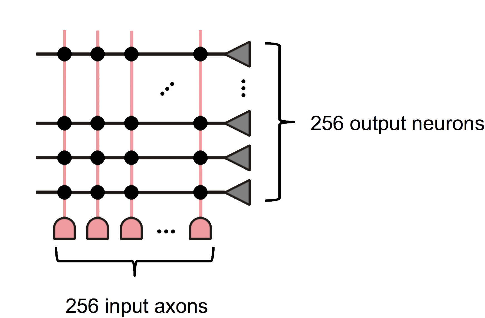
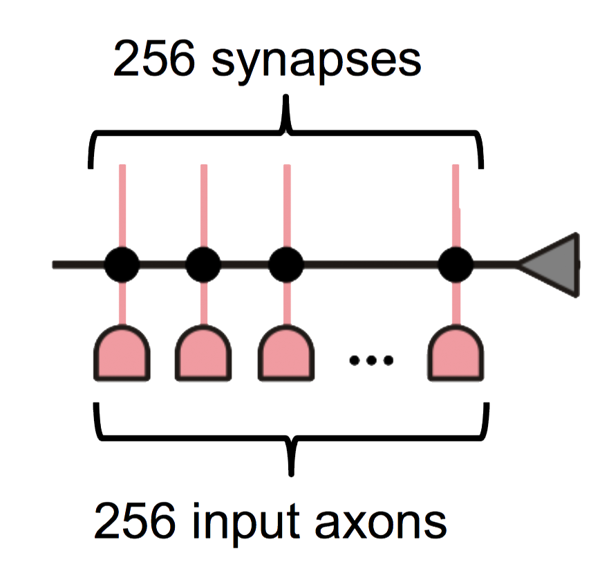
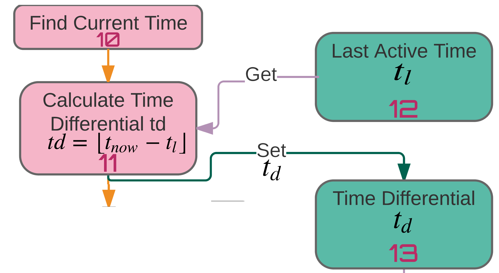

A Brief Overview of PDES
Parallel Discrete Event Simulation
- Provides a fast way to simulate large systems
- Uses event based processing
- Computation only occurs when a process receives an event
Key Terms
LP: Logical Process - A simulated item. Can be an airport, a cell phone tower, etc...
PE: Physical Process - A running process in the simulation.
Can contain one or more running LPs
Event: A communication between running LPs. Events drive the simulation.
ROSS
ROSS (Rensselear's Optimistic Simulation System) is a PDES simulation toolROSS enables use of the TimeWarp algorithm
TimeWarp Algorithm
- With TimeWarp all PEs process events as fast as they can
- If an event is received in the past, events are "rolled back":
Events are undone until received event is in the proper order.
IBM TrueNorth Neuron
Neuron Implementation
- IBM Enhanced the Leaky Integrate and Fire Neuron
- Added stochastic integration:
- Enables probabilistic leak and synapse integration
- Enhanced integration allows for conversion of Caffe models
Neuron Implementation
IBM added 3 new leak modes:  Negative |
Divergent |
 Convergent |
|---|
Leak modes allow for greater flexibility over LIF model
Able to reproduce Izhikevich's biologically important neuron models
For those interested
Full IBM TrueNorth neuron formula and description available as handout
IBM TrueNorth Hardware Layout
- Developed through DARPA project
- Designed as a low power dedicated processor
Input Axons
Input axons are arranged in a connected grid Synapses exist as a logical connection between axons and neurons.
There are $256^2$ synapses per core
One neuron connects to one axon
One axon connects to all neurons in a core
NeMo Implementation
- Synapses send event messages to the neuron
- Neurons integrate the synapse weight at this point
- Previous voltage is saved in message

Synapse Message Part 2
- Neurons check to see if a "heartbeat" message has been sent
- Send heartbeat message if one has not been sent

Heartbeat Message Recevied
Neurons receiving a heartbeat message have either:
- Had synaptic activity this tick
- Have the potential to be self-firing
- Positive leak
- Negative leak with specific reset values
- And More!
- Neurons save current membrane potential in the message

Neurons then:
- Retreive current time
- Calculate the number of ticks since last activating
- Store this as $t_d$

Leak calculation:
while (td > 0) {
voltage = voltage - leakFunction();
td --;
}
Threshold, reset & fire

- Check if voltage $V_j$ is $>$ than threshold
- Send fire message
- Reset or check negative threshold
Nemo Event Flow

Given an event at $Ax_0$(axon 0)
- Synapse $S_{0,0}$ through $S_{0,2}$ activate
- All neurons integrate
More NeMo Features
This allows for large hardware simulations!
Further integration with existing supercomputer simulation models
Nemo will have support for JSON neuron models
Input support through Python
NeMo will gain flexibility
NeMo Experimental Results
Future Work
The next steps for nemo include:
- Integration with supercomputer simulation software
- JSON neuromorphic core design support
- Pythonic I/O for integration with spiking neural network tools